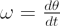
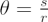
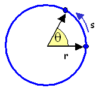
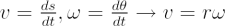

For rotational motion about a point or axis, angular velocity is the rate of change of the angular position with time, or in other words the derivative of the angular position with time:
 = angular velocity, |
where | θ = the angular position |
| t = time |
|---|
The direction of the angular velocity vector is perpendicular to the plane of rotation as given by the right-hand rule. The angular velocity is expressed in units of [angular distance/time], often radians per second.
For an object moving in a curved path it can be useful to describe the motion using both angular and linear velocities. Using a fundamental relation for circular geometry:
|  |
|||
| where | θ = angle |
 |
|
| s = arc subtended by θ | |||
|---|---|---|---|
| r = radius of the circle |
The magnitudes of the linear and angular velocities are related by:
 |
where | v = linear velocity |
| r = distance from the axis of rotation | ||
|---|---|---|
| ω = angular velocity |
Note that we are not using vector notation in this expression, rather it is the magnitude of the velocities that follow the relation.